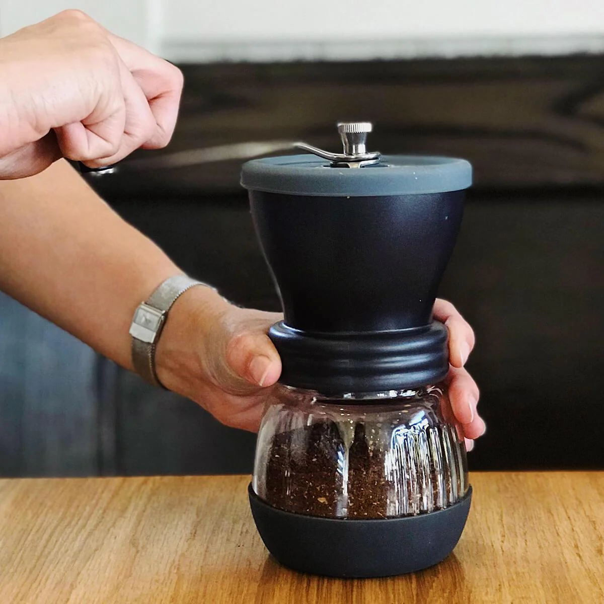

Coffee Grinders
Choosing the right grinder can significantly impact the quality of your coffee. Here are some popular options:
- Burr Grinders
- Manual Grinders
- Electric Grinders
Video Tutorial
Grinder Comparison
| Grinder | Type | Price | Features |
|---|---|---|---|
| Baratza Encore | Burr | $139 | 40 grind settings, electric |
| Hario Skerton | Manual | $50 | Adjustable ceramic burrs, portable |

